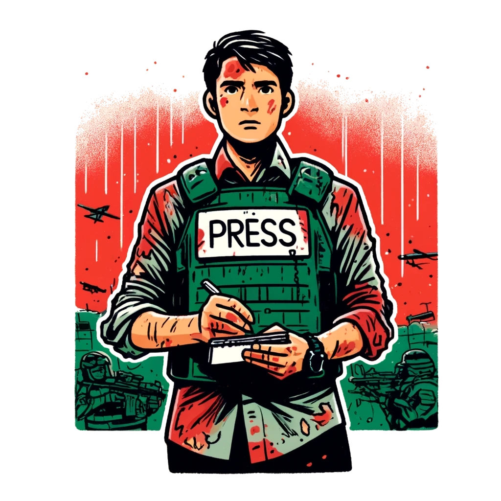

-
Who we are?
Peace Report began as a humble school project with a profound mission: to give a voice to thousands of individuals worldwide who lack connections to major media companies. Every story matters, and through Peace Report, we aim to amplify the personal narratives that deserve to be heard, shining a light on the diverse experiences and perspectives that make up our global community.
-
Where are we now?
Currently, an offline prototype of the Peace Report platform exists. This prototype is fully open-source, aligning with our commitment to transparency and community collaboration. However, it is not yet ready for public release. Significant work remains to enhance security measures and refine the user experience. These critical checks and improvements are our current focus to ensure that Peace Report will be a secure, seamless, and reliable service when it becomes available to the public.
-

Our future
The next steps for Peace Report include connecting with independent journalists to bring diverse voices to the platform, conducting thorough security checks, and finding advertisers interested in supporting our mission. These actions are essential for creating a secure, vibrant, and sustainable platform for sharing impactful stories worldwide.